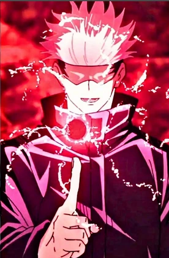
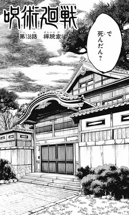
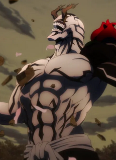

|
 Descubre todas las extensiones disponibles en Jujutsu Kaisen Ultimate |
|
 Explora los diferentes clanes de hechiceros en Jujutsu Kaisen Ultimate |
|
 Conoce las razas disponibles y los votos vinculantes en Jujutsu Kaisen Ultimate |